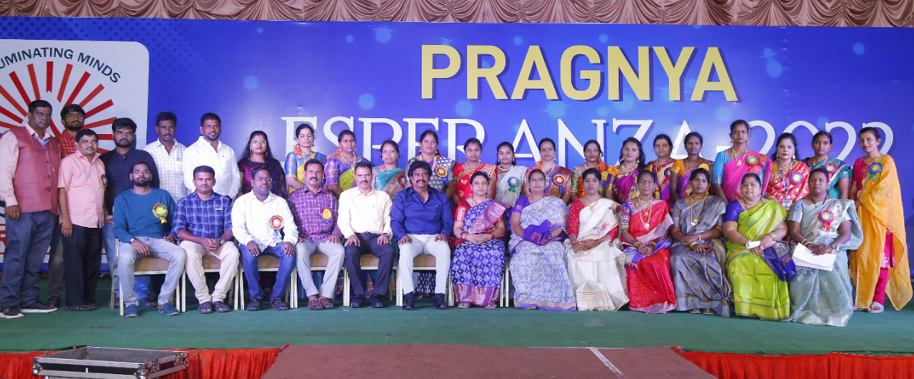
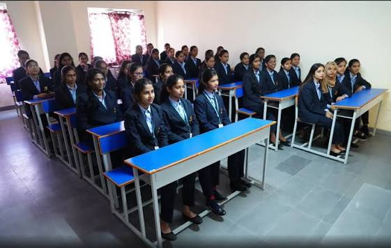

Pragnya Group of college were established with the prime motto of extending quality education with affordability to the common students. Furthermore, with an immense experience in the educational field, our committed board of directors, dedicated staff, and the team have set the advanced methodologies of teaching and learning. This multi-faceted discipline degree colleges serves greatly for the overall development of the students. Thus, it is renowned as one of the best degree colleges in Hyderabad, due to its excellence in delivering top results.




Pragnay Women's Degree College, located in Chandanagar, Hyderabad, aims to promote women's education and empowerment. The institution focuses on creating educational opportunities for young women and helping them build a strong foundation for their future. Through academic learning, extracurricular activities, and skill development, the college encourages students to become confident, knowledgeable, and independent individuals. Its vision is to support women in achieving their educational and career goals.